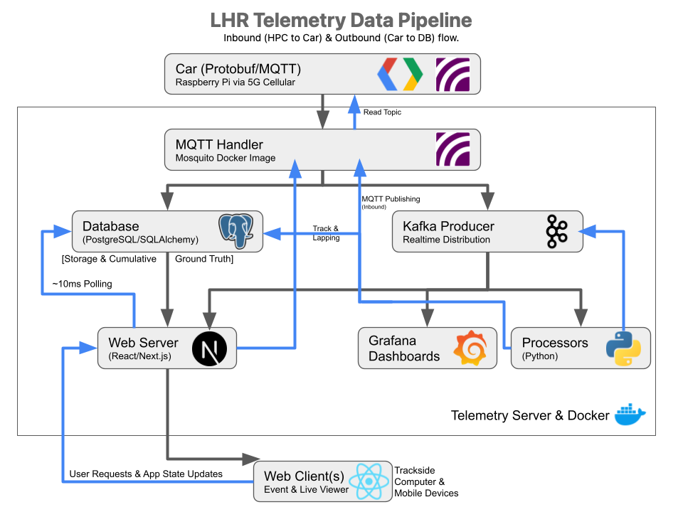
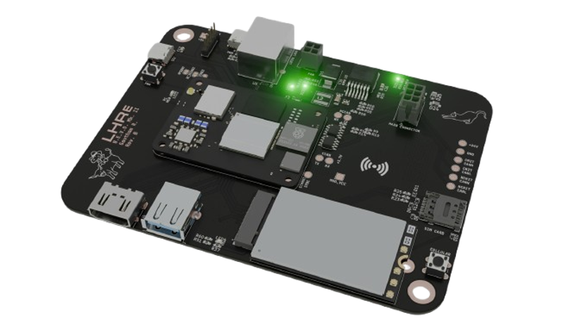
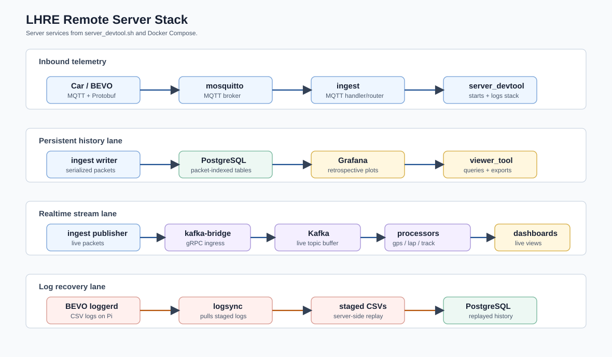
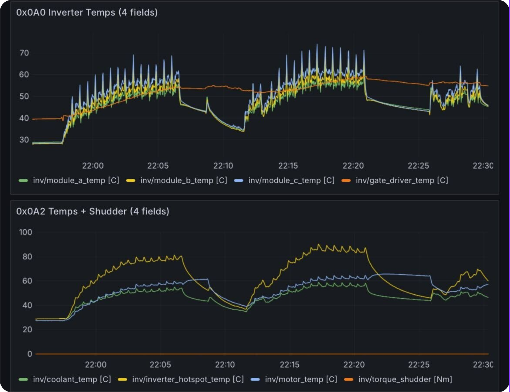

The LHRE telemetry system is a distributed data acquisition and analysis software stack designed
to provide visibility of vehicle behavior without interfering with critical vehicle control
systems. The objective of the telemetry software stack is to enable concurrent collection,
transmission, and visualization of high-frequency vehicular data for real-time and retrospective
analysis.
The LHRE telemetry system employs a distributed architecture that integrates on-car data
aggregation with remote processing through a 5G cellular link to provide vehicle visibility.
On the vehicle, a Raspberry Pi compute module reads sensor data over two CAN buses and serializes
it using Protocol Buffers for efficient transmission over 5G cellular via an MQTT client.

Telemetry pipeline separating on-car acquisition, server-side storage and distribution, and
application-layer visualization.
On-Car Data Acquisition Design
The on-car Raspberry Pi software is designed to continuously acquire, package, and distribute
vehicle telemetry without introducing blocking behavior that could disrupt real-time operation.
To achieve this, the software simultaneously monitors both vehicle CAN buses, aggregates and
serializes sensor data using Protocol Buffers, and manages downstream consumers including local
storage, the driver dash screen, and a remote MQTT broker over a 5G cellular link.
The data acquisition software is decomposed into four parallel daemons that communicate through
Unix domain sockets and coordinate shared state using mutex-protected data structures. The CAN
daemon monitors both CAN buses and serializes vehicle data into a centralized Protobuf schema.
The publisher daemon provides the interface between on-car acquisition and the remote server,
the logger daemon records local CSV backups on the Raspberry Pi, and the dash daemon forwards
telemetry to the on-car dashboard display through a WebSocket connection.
This on-car layer runs on BEVO, the Board Emitted Vehicular Outputs board. BEVO is the telemetry
board built around a Raspberry Pi, giving the vehicle a dedicated compute target for collecting
and forwarding telemetry without sharing resources with the embedded control boards.

BEVO telemetry board with Raspberry Pi compute module.
Remote Server
The remote server is designed as a distributed processing hub that ingests serialized data from
the Raspberry Pi and routes it into persistent PostgreSQL storage and an Apache Kafka stream for
real-time analysis. The system utilizes a containerized microservices approach, employing
independent Docker instances for the MQTT message broker, server MQTT clients, PostgreSQL
database, and Apache Kafka distributor.
The MQTT broker supports both local development and production communication with the
5G-equipped Raspberry Pi. Server MQTT clients route serialized Protocol Buffer messages into
PostgreSQL for persistent storage and into Kafka for live distribution. PostgreSQL organizes
incoming telemetry around packet identifiers and subsystem tables for dynamics, controls, pack,
diagnostics, and thermal data, while Kafka decouples real-time dashboards and processors from
the number of active consumers.

Remote server services organized into inbound telemetry, PostgreSQL history, Kafka streaming,
and log recovery paths.
Applications
The client application layer is designed to convert the PostgreSQL database and Apache Kafka
distributor backends into interfaces for real-time analysis. Grafana dashboards and web applications
read from the server-side storage and streaming paths to display vehicle dynamics, pack data,
controls, diagnostics, and thermal behavior.
Real-time applications primarily consume Kafka streams to maintain low-latency updates with many
simultaneous viewers, while retrospective applications query PostgreSQL to access complete data
history with filtering and event scoping. Grafana is configured for both real-time plotting
from Kafka and retrospective plots from PostgreSQL, while the custom web server supports
visualization and data-management workflows that extend beyond standard Grafana panels.

Grafana panels showing inverter and thermal telemetry from vehicle runs.
By isolating telemetry workloads from critical vehicle control functions and using a remote server
for processing and storage, the system enables consistent access to vehicular data without
impacting control performance. This design provides a foundation for hardware-in-the-loop testing
and vehicle modeling, supporting data-driven iteration and improvement for future vehicles.